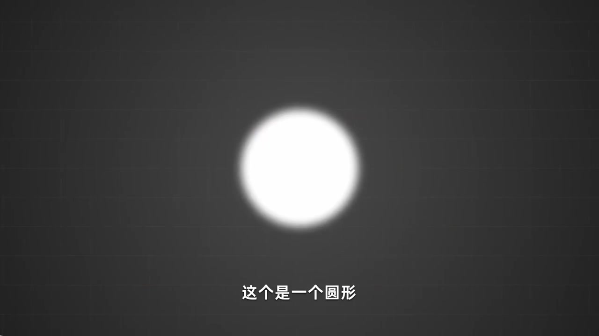
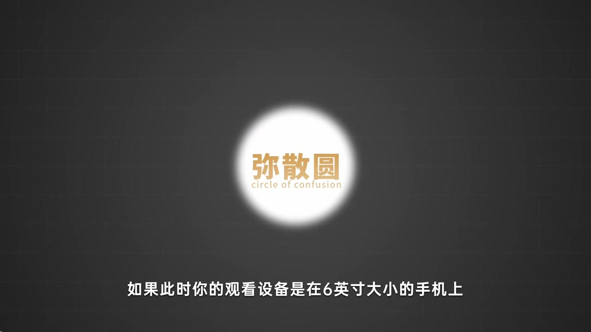
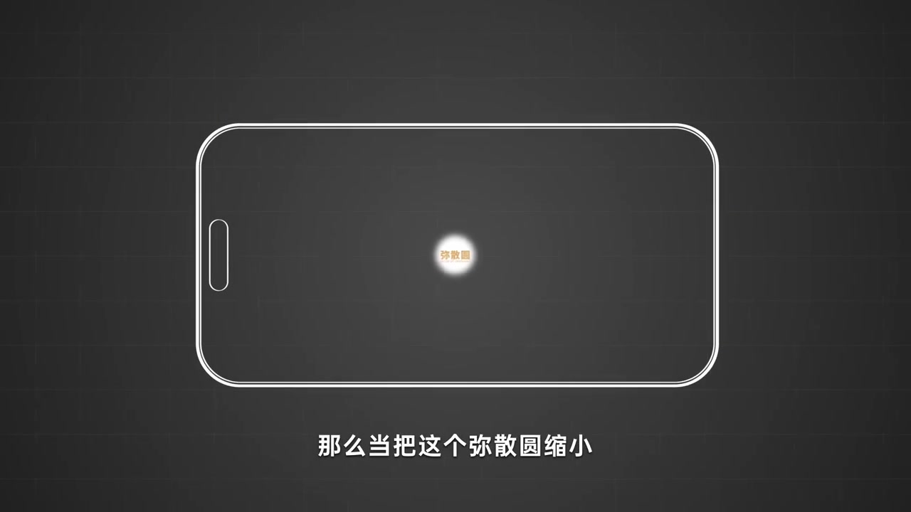
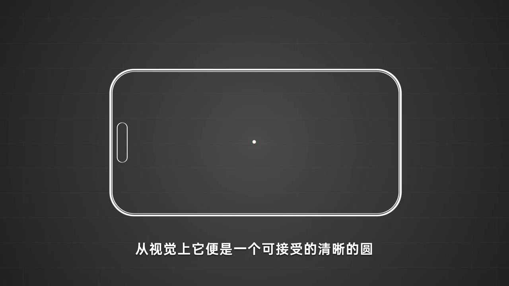
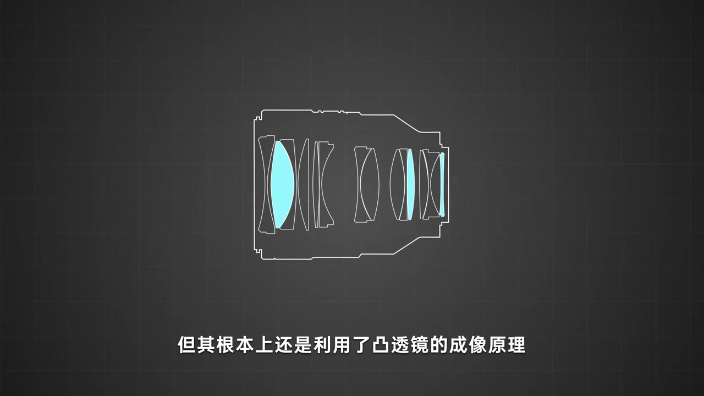
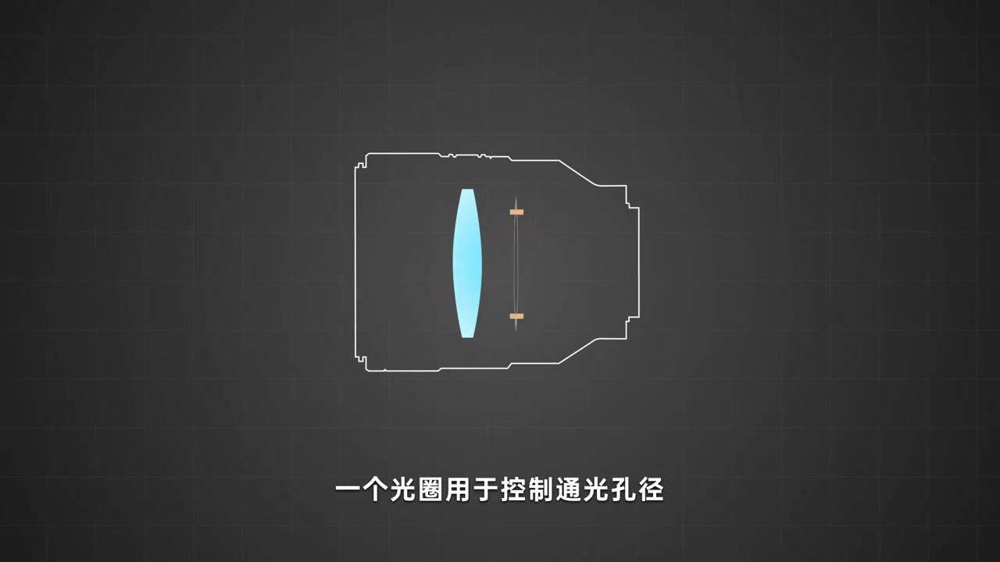
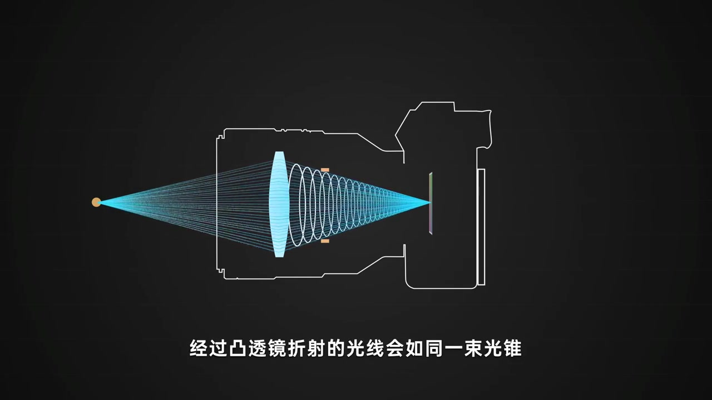
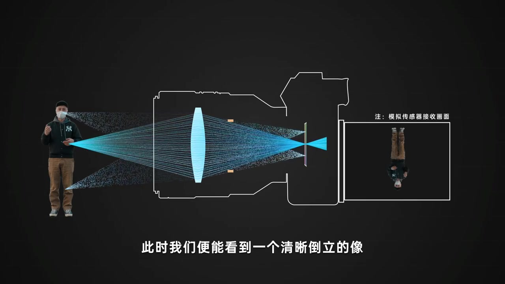

开场：先丢给你一个模糊的圆
深色网格底上，一个边缘发虚的白色圆形亮起。旁白没有急着讲公式，只是让你先「看见」模糊本身——后面整集都在解释：这个糊圆从哪来、小到什么程度你才会觉得它清晰。
画面字幕：「这个是一个圆形」
说明：Whisper 常把「弥散圆」识成「迷散园 / 泥散圆」，「凸透镜」识成「偷偷镜」，「光锥」识成「光追」，「倒立」识成「道立」，「汇聚点」识成「会计点」。下文叙述以可见字幕与动画画面为准；页面末尾仍完整保留全部 Whisper 分段。

正式命名：弥散圆 / circle of confusion
圆心里叠上橙金色大字「弥散圆」，英文副标 circle of confusion。旁白说「我们暂且称它为弥散圆」——后面所有「糊」的讨论，都围绕这个光学概念展开。
画面字幕：「我们暂且称它为弥散圆」

假设你在 6 英寸手机、约 30 厘米处看
动画画出手持手机轮廓，把弥散圆「放进屏幕」。旁白设定观看条件：设备大约 6 英寸，观看距离大约 30 厘米。然后把圆一缩再缩——糊感逐渐消失，很多人就察觉不到模糊了。
画面字幕：「那么当把这个弥散圆缩小」

缩到「可接受」：容许弥散圆
圆缩成屏幕中央一个几乎像点的亮斑。旁白总结：从视觉上它便是一个可接受的清晰的圆；这个可接受的弥散圆，就叫「容许弥散圆」。换句话说——绝对清晰很少见，常见的是「糊到你察觉不到」。
画面字幕：「从视觉上它便是一个可接受的清晰的圆」

镜头再复杂，根基仍是凸透镜成像
话题从「人眼怎么看糊」切到「镜头怎么成像」。动画先给出多组多枚镜片的剖面轮廓，再高亮部分镜片，字幕点出：根本上还是利用了凸透镜的成像原理。复杂结构是为了汇聚光线、优化成像品质，不是另起一套物理。
画面字幕：「但其根本上还是利用了凸透镜的成像原理」

演示用简化：一枚凸透镜 + 一个光圈
为方便演示，动画把镜头拆到最小模型：一枚凸透镜用于成像，一个光圈用于控制通光孔径。接着从小学几何切入——一个面由无数个点组成；取其中一个点对焦，理论上点可以无限小，但传感器有物理极限，最小成像单位是一个像素点。
画面字幕：「一个光圈用于控制通光孔径」

点光源进镜头：折射成一束光锥
左侧橙色物点发出锥状光线进入镜头，经凸透镜折射后汇聚，再在焦点后散开。动画用青色光线与白色椭圆环把「光锥」画出来：理想状态下，光线完美汇聚到一个交叉点——这个交叉点就是焦点。
画面字幕：「经过凸透镜折射的光线会如同一束光锥」

焦点落在传感器 → 清晰倒立像；焦点外 → 弥散圆
当焦点与传感器重合，物体面上的那个点就能清晰呈现在画面上；平面上多个点一一对应投射，便得到清晰倒立的像。动画用真人侧影演示：左侧站立的人，右侧「模拟传感器接收画面」里出现清晰倒立像。
收尾把概念收回弥散圆：严格来说只有焦点上成像最清晰；在汇聚点之外的光锥上，可以想象成无数个扩散且模糊的圆——也就是前面定义的弥散圆。容许弥散圆，正是后面讨论景深时「多远算合焦」的尺子。
画面字幕：「此时我们便能看到一个清晰倒立的像」
